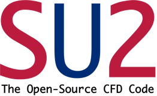

su2code/SU2 1,843
SU2
- #2867 Broken append and var_names paths in SU2.io
- #2940 The heat source fix SkyCatcher's reactor needed
- #2897 Hicks-Henne camber deformation under MPI

Pull request #2940 came out of the SkyCatcher simulations, where the reactor needed a heat source inside the flow. What I needed for my own runs went back upstream.